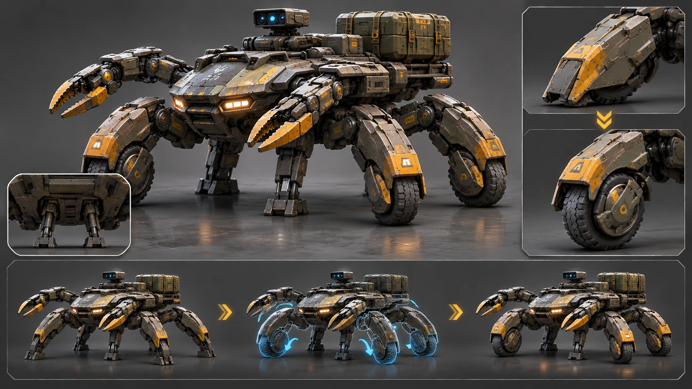

Infantry escort
Standard configuration with rider, armored chassis, side manipulators and two needle guns.

Compact crab-shaped infantry support platform. A six-legged mechanical walker with two side-mounted claw manipulators, a forward-leaning motorcycle-style rider position and two standard needle guns beside the front headlights.
R-10 is designed to accompany infantry and support its operations over difficult terrain. Its primary role is to provide a compact mobile platform combining protected movement, observation, carriage of essential equipment and casualty evacuation. In combat situations it operates alongside the unit rather than replacing it.
The platform has a distinctly crab-like silhouette: a broad, low armored carapace, six legs spread around the perimeter and two separate claw manipulators. The base vehicle remains compact at the rear; it has no permanent large cargo compartment.
The central chassis is broad, flat and low, with a rounded armored shell. Six locomotion legs attach around it in three pairs. Their joints and segments are visibly distinct from the manipulators so the machine reads as a crab-like platform rather than an insect.
Two manipulators are mounted on the sides of the forward half of the chassis, slightly ahead of its centre. They extend out to the left and right like a real crab’s claws. They are separate articulated assemblies, not legs and not part of the front “face”. Their end effectors have a clear pincer shape.
Two headlights are positioned at the front of the chassis. Immediately beside them, symmetrically left and right, are two standard needle guns integrated into the forward armored block. They remain visually distinct from both the headlights and the manipulators. Both headlights and both needle guns should be visible in illustrations.
R-10 has two movement modes: walking and wheeled. The wheels are not separate exposed assemblies and do not replace the legs. Four wheel cassettes are built into the armored segments of the four outer legs — the front and rear leg pairs on both sides of the chassis.
In walking mode, the wheel cassettes retract fully inside their protective housings. The visible outer surfaces remain armored leg segments and mechanical feet, keeping the wheels shielded from rubble and combat damage.
To switch to wheeled mode, the four outer legs change position and the wheel cassettes deploy downward and lock. Armored covers shield the upper and inner portions of each wheel, leaving only the necessary contact surface exposed. The two middle legs fold beneath the chassis and lock; they can briefly lower to stabilize the platform on uneven ground.
In wheeled mode, the platform travels on four wheels while the two middle legs provide auxiliary stabilization. On difficult terrain, R-10 returns to walking mode: all six legs become active supports again and the wheels retract into their armored cassettes.

The operator does not sit upright and is not enclosed in a cockpit. The rider straddles the chassis like a sport motorcycle: chest and abdomen rest on an inclined armored support, the pelvis sits on a small saddle behind it, and the legs bend down along the sides. The upper torso is slightly raised, with the head above the front section of the chassis.
The posture must look natural and anatomically plausible. The rider is neither lying flat nor sitting upright like a tank commander. It is a forward-leaning racing posture adapted to a compact six-legged platform.
Standard configuration with rider, armored chassis, side manipulators and two needle guns.
The base platform is identical across variants. Any compatible specialist module — cargo, medical, engineering, reconnaissance, communications or other equipment — attaches to mounting points on the robot’s back. The base configuration has no permanent large rear compartment.
A removable medical module with a stretcher mounts on the robot’s back without changing the base chassis, six legs or two manipulators.
A removable engineering module mounts on the back; the two standard side claws remain part of the base platform.
All specialist equipment is mounted on the robot’s back. The base chassis, six legs and two side manipulators remain the same in every configuration.
From every angle, R-10 keeps the same geometry: a broad, low armored carapace; exactly six locomotion legs; two claw manipulators on the sides, slightly forward; one rider station with a forward-leaning motorcycle posture; two needle guns beside the front headlights; and no permanent rear cargo compartment.
CREATE A REALISTIC CINEMATIC ILLUSTRATION OF THE FICTIONAL R-10 ROBOT FROM THE “KHARAKTERNYKY” UNIVERSE. FIXED DESIGN CANON: R-10 is a compact, low, broad, crab-shaped infantry-support walker. Its central body is a flat, wide armored carapace, not a tall superstructure. EXACTLY SIX locomotion legs — three on each side of the chassis, arranged around its perimeter. The legs have heavy segmented mechanical links, visible joints and broad support feet. EXACTLY TWO separate claw manipulators are mounted on the SIDES of the forward half of the chassis, slightly ahead of its centre. They extend out to the left and right like a real crab's claws. The manipulators are NOT mounted on the front face, are NOT legs and are NOT counted among the six locomotion legs. ONE rider station is mounted on top. The rider adopts a sport-motorcycle posture: chest and abdomen supported by a sloped armored rest, pelvis on a small saddle behind it, legs bent down along the sides, upper torso slightly raised. No upright tank-commander posture, no enclosed cockpit, no flat prone position. At the front of the chassis are TWO headlights. Immediately beside them, symmetrically left and right, are EXACTLY TWO compact needle guns integrated into the front armored block. Keep guns, lights and side claws visually separate and clearly readable. The standard base configuration has NO large rear cargo compartment, NO rear container and NO permanent cargo rack. Keep the rear compact and clean. Finish: matte dark olive and graphite-grey armor, restrained yellow technical markings, realistic panel seams, service hatches, joints, actuators, shock absorbers and protective covers. Heavy but compact industrial proportions. Strong crab silhouette. STYLE AND COMPOSITION: Photorealistic cinematic science fiction, believable materials, natural physically plausible lighting, restrained dust and atmosphere. Enough light to read the construction clearly. Not cartoon, anime or toy-like. Default landscape 16:9. Show the entire robot without cropping legs, claws or rider. Default camera: front three-quarter view, slightly elevated. FRAME-SPECIFIC VARIABLES: Image type: [hero view / infantry scene / movement / cargo transport / casualty evacuation / close-up / technical diagram]. Camera: [front three-quarter / side / rear / top / close-up]. Action: [describe]. Environment: [describe]. Lighting: [describe]. Additional details: [only what is needed for this frame]. FINAL CANON CHECK: Exactly six legs; exactly two side-mounted forward claw manipulators; one rider in a forward-leaning sport-bike posture; two needle guns beside the headlights; no permanent rear cargo compartment; broad low shell; unmistakably crab-shaped. Correct any mismatch without changing the canon.